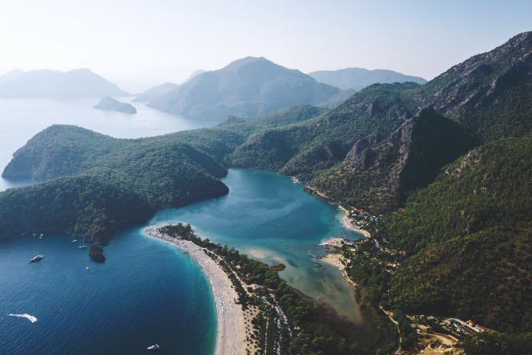
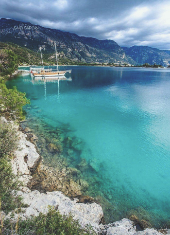
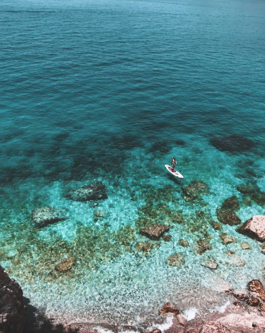
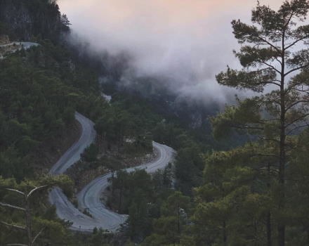

Ölüdeniz
Курортный поселок Олюдениз находится в 15 км от Фетхие в очень красивой бухте. Эта бухта, окруженная сосновыми лесами настолько красива, что местные жители называют ее «подарком Бога миру».
Благодаря запрету на строительство высотных зданий, поселок сохраняет свое очарование. Панорама пляжа, косой уходящего в море и отделяющего просторную синеву залива от Голубой Лагуны, захватывает дух.
Название курорта переводится как «мертвое море». В Турции Олюдениз считается одним из лучших курортов, поэтому сюда ездят отдыхать и сами турки на выходные или же всей семьей в отпуск.
Курорт Олюдениз относительно спокойный и больше подходит для семейных пар с детьми, любителей природы и дельтапланеризма. Ночная жизнь здесь присутствует, но не такая бурная, как на других турецких курортах.
Инфраструктура поселка развита хорошо. На главной улице, которая тянется на 500 метров, Вы найдете много кафе, магазинов, баров, пунктов обмена валюты и турагентств.
Климат здесь субтропический. Самое лучшее время для отдыха — с мая по октябрь. С мая здесь устанавливается дневная температура воздуха + 26-30, море ещё прохладное в это время, но купаться уже можно.
В сентябре считается самое идеальное время для отдыха — можно и накупаться в очень теплом море и в то же время посмотреть интересные места не в самую жаркую погоду.
